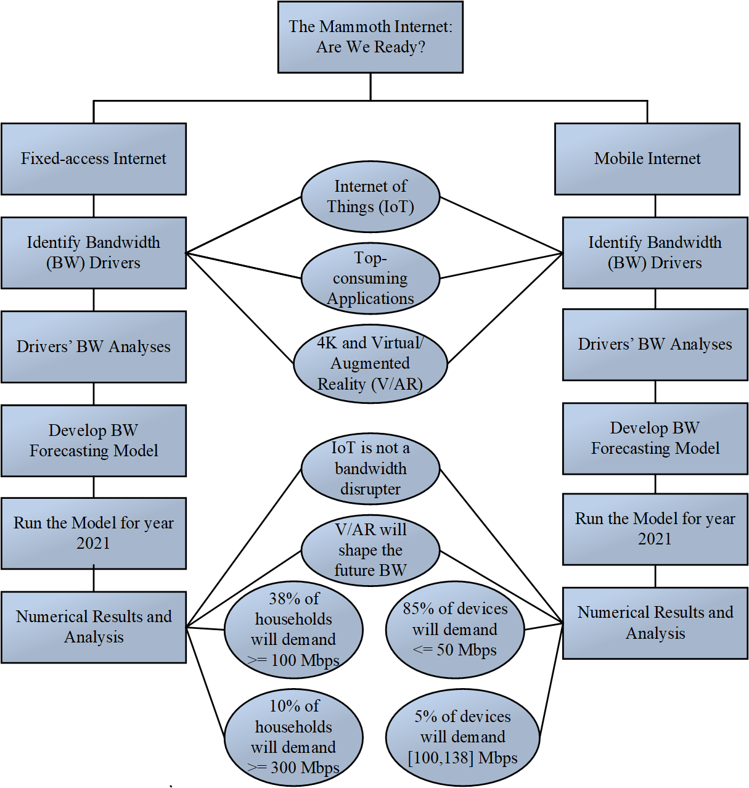

Abstract
The Internet has made massive progress since the 1990s. The amount of traffic that crosses the Internet now is 22 million times more than what was generated in 1992. Although the fiber optic
cables replaced the century-old copper cables to transmit trillions of bits per second, the end-user at a local area is still hungry for more bandwidth to run new emerging applications. This put both
ISPs and the mobile network operators under challenges: Are they ready for the Mammoth Internet? Will ISPs be able to offer the capacity to meet the growing demand? Is their infrastructure
capable of serving the future disruptive services such as 4K/8K technology, VR/AR, autonomous vehicles, etc? The literature lacks a comprehensive study of bandwidth requirements for the end-
user in both fixed-access and mobile Internet.
Introduction
The advancement of telecom technologies in recent years has opened the door for the development of next-generation digital services and applications. However, they have also led to a huge
surge in data traffic that has evolved from Kilobytes to Exabytes over the years. These data-driven services have different Internet bandwidth (BW) requirements. Therefore, the projection of the
future BW requirements for consumers of these services is of direct interest to Internet Service Providers (ISPs) and cellular networks operators. Overlooking this problem poses a real risk to their
networks and consequently may impact their customers.
Contributions
The coming few years will be critical for cellular operators and ISPs to make their future networks adaptable to include a multitude of cellular-enabled devices and services. The contributions of this
paper are as follows.
1. Identify most disruptive bandwidth drivers for both fixed-access Internet and cellular-based Internet.
2. Provide a case study of flagship smartphones and their bandwidth requirements for streaming video contents.
3. Develop forecasting models for both fixed-access Internet, and cellular-based mobile Internet; and then project the future bandwidth requirements for the users of both networks by year 2021.
4. Conduct multiple experinents to show the validity of our models, and the impact of each bandwidth driver on the future of bandwidth requirements.
The following diagram shows the flowchart of our paper.
Results
Applications Bandwidth Requirements
The following Table shows the top application mix in terms of mobile bandwidth consumption, the market share of each of them in 2021.
TABLE 10. Bandwidth requirements of top applications with the presence of 4K technology for various distribution of connection sharing/tethering group size, 2021.
| Application | 2021 (% market share) |
| Entertainment-Video (YouTube, Netflix, others) | 44.4 |
| Entertainment-Audio (¡Tunes. others) | 1.8 |
| Social Networking (Facebook, snapchat, Instagram) | 22.29 |
| Web browsing (HTTP, WAP browsing) | 6.4 |
| Communications (Skype, WhatsApp. iMessage, Face Time, Zoom, etc) | 7.39 |
| Tunneling (SSH, VPN, Remote Desktop, VNC, SSL, etc) | 8.11 |
| Google Cloud | 3.7 |
| Other (clouds. Twitter, etc) | 5.91 |
This paper provides an insightful proiection of the future bandwidth of both fixed-access and mobile Internet. For the two approaches, fixed-access and mobile Internet, we identify the bandwidth drivers and compare them in terms of their impact on the future bandwidth demand. We design our models of fixed-access/mobile Internet to cover a wide variety of household/connection-sharing types and as well as users' Internet usage behavior. Our findings in fixed-access Internet show that 4K and VR/AR technology will shape the future of residential bandwidth. On the other hand, while IoT is growing on an everyday basis with many potential innovative technologies, it will not alter the bandwidth consumption pattern of typical households. Our model predicts a jump in residential bit rate demand, especially for houses that adopt more new technology such as VR/AR and 4K video streaming. We project that more than 35% of households will demand a bit rate speed of more than 100 Mbps, and 10% will require more than 300 Mbps.
For more information, click here